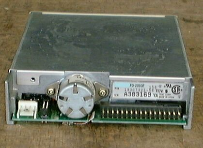
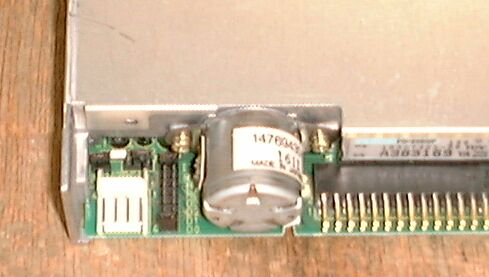

3.5インチFDD TEAC FD-235GF
FD235GFの写真です。FD1137C、YD-686Cと互換性があるようです。
正確な型番は、FD-235GF 156-U、P/N 19307321-56です。

Jumper部の拡大です。左奥1x2pin jumper on、その右1x3pin jumper 右側on、
右8x2pin jumper D0 or D1 on 一番奥の無名のjumper on or off。

98FDDのページに戻る